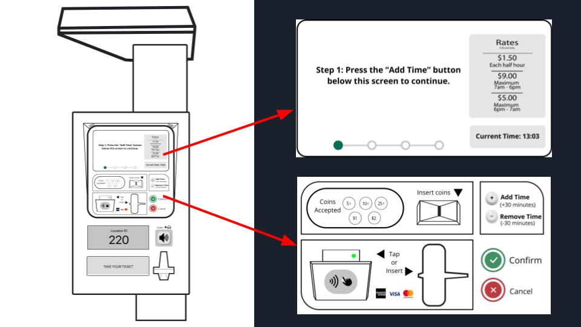

GREEN P ACCESSIBLE
PARKING METER

April 2021 / Designed as part of the University of Toronto's Accessibility & Inclusive Design course. The challenge was to take an existing technology or product and evaluate where accessibility recommendations could be made. My group and I decided to focus on the Green P Parking Meter, the common parking meter system found around the city of Toronto.
PREVIEW
PROCESS
Research
We effectively broke out research up into three different components: the current Green P Parking Meter and how it functions; similar ticketing systems that already meet accessibility standards such as Toronto's Presto system for public transportation; and user research to understand the types of users who may be affected by the inaccessible options Green P currently presents. We decided to also generally focus our research on seniors, because they tend to rely more often on physical parking meters (vs. mobile app options) and are more at risk for disabilities that may affect them cognitively or physically as they age.
Problem Statement
After researching, we settled on the following problem statement:
According to Statistics Canada (2012), 33% of people aged 65 and older reportedly had some type of disability such as cognitive decline, limited vision, loss of dexterity and other forms of disability may present, and 81% of them have a valid driver’s license. We also know that the majority of senior drivers intend to keep driving as they age (State Farm, 2017), which shows how they rely on driving as a transportation modality. Therefore, the needs of senior drivers and the barriers they might face due to aging must be considered when designing products and services they interact with like drivers. However, when we look at the design of Green P parking meters with its tiny fonts, small screens, and complicated instructions to follow, it becomes quite apparent that the design does not consider seniors’ accessibility needs.
Prototype
We then created a user journey and I drafted a prototype we could use to sketch out a new system. We broke down the components in relation to the disabilities we identified and researched how the components (such as payment and ticket retrieval) could be either changed or simply moved on the current Green P interface without modifying the entire physical meter itself.
The changes made included:
• We replaced the main section of the current Green P meters with a large digital screen to mitigate porential cognitive overload. This screen takes users through the payment process step-by-step with audio options for those hard of hearing, including a headphone jack.
• An overhang was added over the screen to block any glares from the sun in order to help users with vision difficulties.
• A larger concaved coin slot was added to assist users with dexterity issues/hand tremors. The slot would help guide the coin in.
• Buttons were enlarged and clearer labels were added with arrows when neccesary to make it clear what the components were intended for.
• A contactless paymen option was added for users who may find it too difficult to insert a card.
• The ticket retrieval, originally take-and-tear, was transformed into a ticket drop with a large opening to make it easy to retrieve tickets.
• An overhang was added over the screen to block any glares from the sun in order to help users with vision difficulties.
• A larger concaved coin slot was added to assist users with dexterity issues/hand tremors. The slot would help guide the coin in.
• Buttons were enlarged and clearer labels were added with arrows when neccesary to make it clear what the components were intended for.
• A contactless paymen option was added for users who may find it too difficult to insert a card.
• The ticket retrieval, originally take-and-tear, was transformed into a ticket drop with a large opening to make it easy to retrieve tickets.
To view the Figma board and the full user journey with screens, click here.

REFLECTING
Next Steps
We were only able to test on three older users to gain some initial insight into small fixes that could be made, all of which were added to the above prototype but overall the it was received well. Ideally, we would test on a few more older users with disabilities to better gauge the effectiveness of the prototype. Because this is a physical product, a further step would be seeing how a physical prototype performs in a similar environment to that in which it would be used.